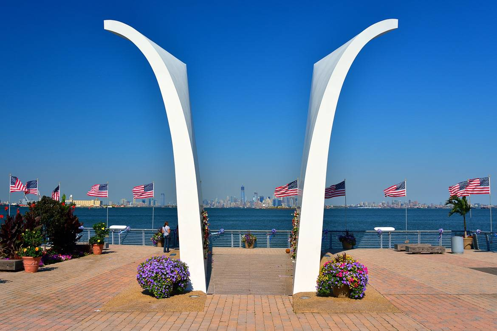

| Photo |
Description |
 |
Staten Island Ferry:
More than a means of transportation, the Staten Island Ferry is an attraction unto itself. For no charge, visitors can take a 25-minute voyage by water from Lower Manhattan to Staten Island and take in the Statue of Liberty and the stunning vistas of New York Harbor and the Manhattan skyline. The ferry docks at the St. George Ferry Terminal, just a short bus ride from the Snug Harbor Cultural Center & Botanical Garden. This cultural and entertainment destination (a former seamen's retirement home) encompasses a number of institutions whose diverse offerings should appeal to all interests and ages. Among them are the Newhouse Center for Contemporary Art, the Noble Maritime Collection and the Staten Island Children's Museum.
|
|
South Beach:
Free concerts and fireworks are just two of the many reasons why South Beach is one of Staten Island's most popular locales. There's more to do than sunbathing and swimming—though both are favorites of many South Beach visitors. A fountain with six bronze dolphins features colorful lights that illuminate at night. There's a park especially for seniors that features checkerboard tables, bocce courts and lots of benches. And the Ocean Breeze fishing pier is huge—one of the largest in the City—and ideal for fishing or just enjoying the atmosphere.
|
|
Fort Wadsworth:
Located on the northeastern shore of Staten Island, Fort Wadsworth is a 226-acre public park that was once the longest continually operating military fort in the nation. Now part of Gateway National Recreation Area, Fort Wadsworth gives visitors plenty of unique opportunities to explore the site’s history—including walking through the fort’s underground tunnels, taking a trip up the overlook tower, visiting the historical Mont Sec History House or learning about the area’s ecology and future at the visitor center.
|
|  |
Postcards – Staten Island 9/11 Memorial:
Hugging Staten Island’s Northern shore, the Esplanade offers picture-perfect views of Manhattan. A short walk from the Ferry Terminal along the Esplanade, brings you to Postcards, a stunning and somber memorial to the 275 Staten Islanders lost on September 11, 2001.
Dedicated on the third anniversary of the attack in 2004, the memorial features two fiberglass structures resembling postcards, perhaps being sent to lost loved ones. The memorial honors each victim with a profile on a granite plaque listing their name, birth date, and place of work at the time of the attack. This was the first major 9/11 memorial to be completed within New York City and frames the location across the water where the towers once stood.
|
|
Alice Austen House:
A vibrant cultural center, the Alice Austen House keeps the daring spirit of the early American photographer Alice Austen alive by presenting changing exhibitions of her pioneering historic photographs and of contemporary photography, providing education programs for students and offering a range of cultural programs for the public. A charming Victorian Gothic Cottage that was Alice’s home serves as the museum and is located in a lovely park on the shore of Staten Island near the Verrazano-Narrows Bridge with sweeping views of Brooklyn and Lower Manhattan.
|